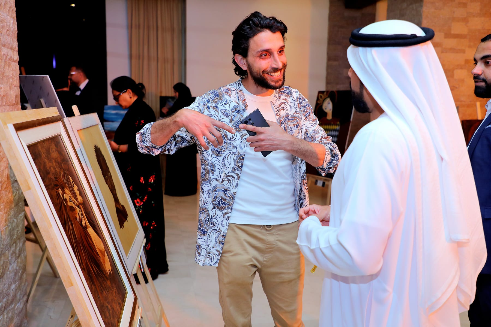

Sasun Sargsyan
بيزا · توسكانا · إيطاليا
وُلد عام 1991. يعمل منذ التاسعة.
الجذور
وُلد ساسون سارغسيان في 17 سبتمبر 1991 في يريفان، أرمينيا. في التاسعة من عمره بدأ العمل بالخشب — لا كدرس، ولا كتمرين مدرسي، بل لأن شيئًا في هذه المادة شدّه إليها. دقّتها. واستحالة التراجع عن كل قطع. وواصل العمل بها طوال الخمسة والعشرين عامًا التالية.
التكوين
أتمّ دراسته الجامعية في أرمينيا، ثم أسّس عملًا تجاريًا حقيقيًا — نجح لعدة سنوات، ثم توقّف. علّمه الإخفاق ما لا يعلّمه النجاح: أن يميّز ما يبقى حين يسقط كل ما هو مؤقت. وطوال تلك السنوات، لم تتوقف الحرفة قط. لم تكن يومًا منفصلة عمّا هو عليه.
إيطاليا
قطع نزاع عام 2020 في آرتساخ الحياة التي خطّط لها. انتقل إلى توسكانا عام 2021 — وصل بلغة لم يكن يتحدثها بعد، وبقرار اتخذه بهدوء حول ما يهمّ حقًا. أسّس عملًا تجاريًا في إيطاليا أيضًا. وقد علّمه هو الآخر شيئًا حين أُغلق.
الفن رسالةً
بحلول عام 2022، ولأول مرة في حياته كراشد، لم يعد هناك متّسع إلا للعمل. ما بدأ في التاسعة أصبح هويته المهنية الكاملة. أنجز أولى بورتريهاته الكبرى — لا كاكتشاف جديد، بل كتحضير طويل وجد أخيرًا مساحته. وبحلول عام 2023 كانت أعماله تُعرض في إيطاليا. وفي عام 2024 وصلت إلى دبي.
ليست بداية متأخرة. بل تحضير طويل.
الحاضر والمستقبل
يعمل من مرسم صغير في بيزا، في توسكانا. كل القطع يتم يدويًا. بلا ليزر. بلا قوالب. بلا مساعد. استغرق إنجاز كل عمل في المجموعة ما بين أربعة وستة أسابيع.
يعمل على تأسيس مشغل للأثاث، ويسعى إلى المشاركة في مسابقات الحِرف الدولية، ويعتزم العرض في كبرى صالات العرض في المملكة المتحدة وحول العالم. تُقبل الطلبات الخاصة عبر استفسار خاص، وتبدأ بحوار.
“الخشب يعرف مسبقًا ما يريد أن يكون. ومهمتي أن أصغي إليه.”
Sasun Sargsyan
ما تعرفه اليدان
كل قطع يتم باليد الحرة. وكل قشرة تُنتقى على حدة بحسب اتجاه العروق والدرجة وطريقة احتضانها للضوء. لا شيء يتكرر، ولا شيء تقريبي.
قطع باليد الحرة — بلا ليزر، بلا قوالب

كل قطعة تُنتقى على حدة بحسب العروق والدرجة

البناء قيد الإنجاز — البورتريه يظهر قطعةً بعد قطعة

اتجاه العروق ليس عرضيًا — إنه جزء من التكوين

مراجعة تحت ظروف إضاءة متعددة قبل الطلاء الواقي

الأدوات: سكين، ولوح قطع، وصبر
الخشب لوحةً للألوان
بلا أصباغ. بلا طلاء. كامل التدرّج اللوني — من إضاءات الدردار الفاتح إلى ظلال الوينغي العميقة — هو اللون الطبيعي للخشب نفسه. ما ترونه هو المادة ذاتها.
- الغرض
- إظهار مراحل العمل اليدوي الأصيل بالمواد
- المقترح
- 16:10 · 1600×1000px
- الحالة
- بانتظار صور حقيقية من المرسم
اختيار القشرة — لكل نوع ضوؤه الخاص
- الغرض
- إظهار مراحل العمل اليدوي الأصيل بالمواد
- المقترح
- 16:10 · 1600×1000px
- الحالة
- بانتظار صور حقيقية من المرسم
لوحة الألوان طبيعية بالكامل — من الدردار إلى الوينغي


World Art Dubai، مركز دبي التجاري العالمي · مارس 2024 — جميع المعارض ←
تقدير من المجتمع
حظيت أعمال VaCa Marquetry بتقدير رسمي من بلدية سان جوليانو تيرمي لإسهامها في الحياة الثقافية والفنية الإيطالية. ولسجلّ المعارض، راجعوا صفحة المعارض.

تقدير من البلدية
سان جوليانو تيرمي، إيطاليا
قدّمت بلدية سان جوليانو تيرمي في بيزا — المجتمع الذي تعمل فيه VaCa Marquetry — تقديرًا رسميًا لإسهام المرسم في الحياة الثقافية والفنية الإيطالية. تقدير للعمل، وللمكانة التي صنعها لنفسه.
التغليف والتسليم
يغادر كل عمل أصلي المرسم في تغليف واقٍ مصمّم خصيصًا، يلائم خدمات الشحن الدولي بعناية فائقة. فالتقديم جزء من تجربة اقتناء عمل من VaCa Marquetry.
- الغرض
- إظهار كيف يُحمى العمل الأصلي للشحن الدولي
- المقترح
- 4:3 · 1600×1200px
- الحالة
- بانتظار التصوير
- الغرض
- إظهار طريقة التقديم التي يتسلّمها المقتني
- المقترح
- 4:3 · 1600×1200px
- الحالة
- بانتظار التصوير
بورتريه مصنوع
لكم بالكامل
يبدأ كل طلب خاص بحوار خاص ومعاينة لبورتريهكم نُقدّمها لكم تكريمًا، ونُعدّها خلال 24 ساعة.
ابدؤوا بورتريهكم الخاص